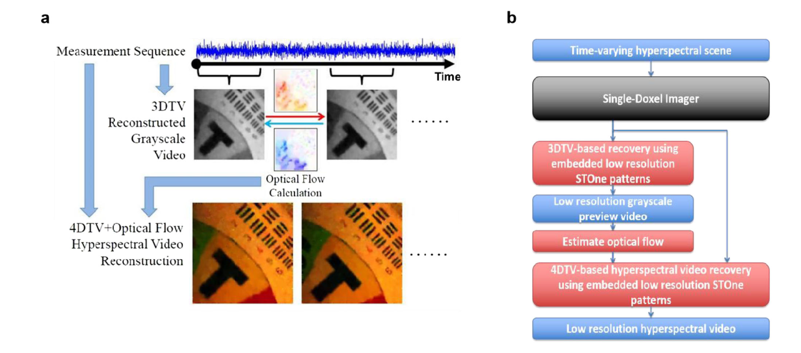

一个探测器怎样记录高光谱视频？
同一块 DMD 编码空间和光谱信息，重建利用相邻帧间的相关性。论文分别报告了空间分辨率、波段数、帧率与压缩比。
A compressive hyperspectral video imaging system using a single-pixel detector
系统与重建
光路先在 DMD 左侧用二维图案调制空间信息，随后通过狭缝和光栅把光谱展开到 DMD 右侧，再用一维光谱图案调制，最终由 Hamamatsu H9306 单元探测器积分测量。
每次测量同时更换空间和光谱图案。空间图案采用可多分辨率重建的 STOne 序列，光谱图案采用伪随机排列的 Walsh-Hadamard 图案。互补图案不仅实现 DMD 的正负编码，还可从同一批原始测量中得到灰度视频，进而估计光流。
重建有两条路线：
- 光流辅助 4DTV：同时约束空间边缘、光谱二阶变化和沿光流轨迹的时间一致性。
- 深度网络：先用 CNN + LSTM 从相邻 5 帧测量恢复灰度视频，再将灰度信息与空间-光谱压缩测量送入残差 CNN 恢复高光谱帧。
研究问题拆解
这篇文章的核心不是“用单像素探测器拍视频”这么简单，而是要同时解决三个矛盾：
- 高光谱视频数据量太大。 一个
128 × 128 × 64帧就有超过一百万个体素，若逐体素采样，单像素系统根本来不及。 - 单像素测量本身没有空间分辨率。 必须通过图案序列把空间和光谱信息都压缩进强度序列。
- 高压缩率下二维先验不够。 只把每一帧当作独立二维图像，在 100:1 以上压缩时已经难以恢复；作者认为四维视频比二维图像更稀疏，因为相邻时间帧和相邻光谱带高度相关。
因此，文章的关键判断是：高维数据不是负担，而是先验来源。只要编码和重建同时利用 x, y, lambda, t 相关性，单像素测量可以以很少数据承载高光谱视频。
光学编码流程细读
- 场景成像到 DMD 左侧。 目标场景被成像到 DMD 左边区域，二维空间图案选择性反射不同空间位置的光。
- 空间积分到狭缝。 左侧 DMD 反射的总光经收集透镜聚焦到狭缝，完成一次空间投影。
- 光谱展开到 DMD 右侧。 光栅把狭缝光谱展开，使不同波长落在 DMD 右侧的不同位置。
- 一维光谱编码。 右侧 DMD 加载条形光谱图案，选择不同波长分量。
- 单像素探测。 被空间和光谱图案共同调制后的光被单元探测器积分。
数学上，一次测量近似是 phi_s^T X_t phi_w：空间编码向量乘在高光谱帧矩阵左边，光谱编码向量乘在右边。这个双边乘积比“先固定空间图案再扫所有光谱图案”的效率更高，因为每次测量都携带新的空间和光谱组合信息。
4DTV 机制细读
4DTV 的目标是解一个欠定反问题，但它不是简单的二维 TV。约束包括：
- 空间维：图像可近似为分片平滑，边缘稀疏。
- 时间维：相邻帧内容相关；运动边缘导致像素变化，而不是整幅随机变化。
- 光谱维：多数可见-近红外光谱相邻波段变化平滑，作者用光谱二阶导数的 L1 稀疏性表达。
- 光流约束：先从原始测量中的互补图案恢复灰度视频，再估计光流，把像素从一帧映射到邻近帧。这比普通时间 TV 更适合运动目标。
关键点：光流不是额外相机给出的，而是从同一批测量中估计的。这使系统保持单像素硬件形式，但也意味着光流质量会影响最终光谱重建。
核心结果
- 完整实验数据：
128 × 128 × 64，361-827 nm，7.3 nm/band。 - DMD 运行 5 kHz，每秒 5,000 个单像素原始测量。
- 数据窗长度 2,048、滑动步长 1,024，得到 4.3 fps。
- 重建 157 帧高光谱视频，压缩比约 900:1。
- 4DTV 在 Intel i7-9750H 上每个
128 × 128 × 64帧约需 390 s，因此只能离线重建。 - 深度网络在 RTX 3070 上重建 16 个
32 × 32 × 41patch 总计约 0.0368-0.0624 s，可快于 4.3 fps 的采集速度。 - CAVE/Harvard 仿真中，压缩比从 100 降至 10 时质量明显提高；例如 CAVE 的 PSNR 从 23.15 dB 增至 28.03 dB。
关键数字怎么理解
- 900:1 压缩率：指未知体素数相对于测量数的比例。这个数字高，是因为一个高光谱视频帧有很多空间-光谱体素，而每秒只有 5,000 个测量。
- 4.3 fps：由 5 kHz 图案速率、2,048 测量数据窗和 1,024 滑动步长共同决定。相邻输出帧共享一半测量，因此并非完全独立帧。
- 390 s/frame：4DTV 版本的重建成本，是本文最重要的 caveat。采集是视频速率，重建不是。
- 深度网络 0.0368-0.0624 s：这是 16 个
32 × 32 × 41patch 的 GPU 总时间，说明网络有实时潜力，但它不是对同一个128 × 128 × 64、900:1 任务的完全等价替代。 - 7.3 nm/band：来自 361-827 nm 覆盖 64 个光谱带；这是系统选择，并不是单像素探测器天然光谱分辨率。
原文图表索引

- Figure 1：光路和矩阵模型。它清楚说明一次测量是空间编码向量、高光谱帧矩阵和光谱编码向量的双边乘积。
- Figure 2：4DTV 重建流程、数据窗和低分辨率嵌套 STOne 重建。
- Figure 3：900:1 的核心实验。结果能恢复运动色轮的空间和光谱变化，但细节明显低于常规相机。
- Figure 4：重建光谱与光纤光谱仪真值的比较。
- Figure 5：有无光流约束的对比。无光流时颜色对比和红/绿滤光片光谱明显偏离，证明时间先验不是可有可无。
- Figure 6-8：深度网络结构、公开数据集结果与真实测量结果。
图表细读
- Figure 1a：看硬件时注意 DMD 被一分为二。左侧负责空间编码，右侧负责光谱编码；这让同一器件同时承担空间和光谱调制，而不是使用两个独立调制器。
- Figure 1b：矩阵图非常关键。
X_t是一帧高光谱数据，左乘空间图案、右乘光谱图案，得到变换域矩阵中的一个元素。稀疏采样矩阵M_t表示只测其中少量元素。 - Figure 2：这张图说明重建不是一步完成。先从互补测量得到灰度视频，再估计光流，再把光流作为 4DTV 约束。低分辨率 STOne 嵌套重建用于快速预览。
- Figure 3：主实验图。b 是灰度视频，c 是普通相机参考，d 是高光谱视频转 RGB。e 说明如果只用二维空间压缩，即使 100:1 也会崩，900:1 更不可能；这支撑了“必须用四维先验”的论点。
- Figure 4：把重建光谱与光纤光谱仪测量比较，说明系统不仅恢复颜色，还恢复波段强度变化。读图时应关注滤光片峰值位置是否对齐，而不仅是 RGB 外观。
- Figure 5：最能证明光流约束价值。无光流的 RGB 颜色偏淡，红/绿滤光片的光谱偏离真值，说明运动相关性影响光谱定量。
- Figure 6：深度网络不是端到端黑箱，而是分两阶段：先恢复灰度视频，再用灰度作为空间时间先验恢复光谱。
- Figure 7-8：公开数据集和实验数据结果展示了网络速度，但真实实验只能做
32 × 32 × 41patch，和 4DTV 主实验不是完全同一个设置。
机制链条
高光谱视频维度高 -> 直接采样带宽不可承受 -> 用 DMD 同时编码空间和光谱 -> 互补图案提供灰度视频和正负编码 -> 从灰度视频估计光流 -> 4DTV 利用空间边缘、光谱平滑和时间运动一致性 -> 在极高压缩率下恢复高光谱视频。
这条链条的薄弱点是光流和稀疏性。如果目标出现快速闪烁、透明重叠、非刚体变形或光谱随时间突变，灰度光流就不能代表每个波长的真实运动，重建可能出现错误光谱。
局限
- “4.3 fps”是采集帧率；900:1 的 4DTV 版本每帧约 390 s，端到端并不实时。
- 深度网络因显存限制只直接处理
32 × 32 × 41patch，真实128 × 128图像通过 16 块拼接。 - 深度模型使用插值后的 Harvard 户外数据训练，而实验目标是彩色滤光轮，存在训练域不匹配。
- 900:1 结果依赖运动平滑、光流可估计和四维联合稀疏；快速非刚体变化、闪烁或尖锐光谱事件可能破坏先验。
- 数据窗相互重叠，因此相邻输出帧不是完全独立测量；评价动态时间分辨率时应考虑这一点。
- 代码仅可向作者索取，复现门槛高于公开代码项目。